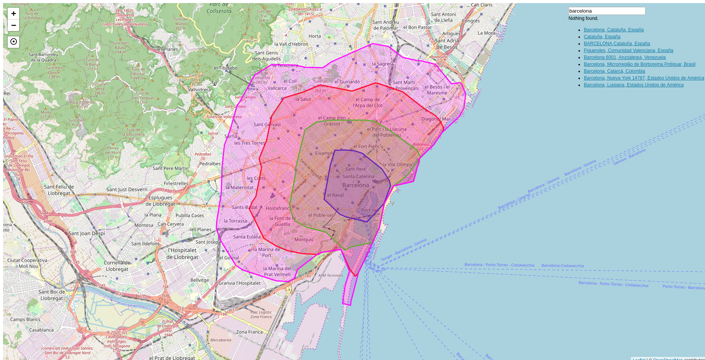

Ejemplo Mobility
Creación de un visor que permita el cáculo de Isócronas
Algunos de los servicios que ofrecen el cálculo de Isócronas son: Targomo, ISO4APP, Openrouteservice y Graphhopper
- Crear una carpeta con el nombre de visor-mobility.
- Crear un archivo con el nombre de index.html dentro de la carpeta.
-
Abrir el archivo index.html con un editor de texto y copiar el siguiente código.
1 2 3 4 5 6 7 8 9 10 11 12 13 14 15 16 17 18 19 20 21 22 23 24 25 26 27 28 29 30 31 32 33 34
<!DOCTYPE html> <html> <head> <meta charset="UTF-8"> <meta name="viewport" content="width=device-width, initial-scale=1.0"> <meta http-equiv="X-UA-Compatible" content="ie=edge"> <title>Ejemplo Isócronas Mapzen</title> <link rel="stylesheet" href="https://unpkg.com/leaflet@1.2.0/dist/leaflet.css" /> <style> #map { height: 100%; width: 100%; position: absolute; } </style> </head> <body> <div id="map"> </div> <script src="https://unpkg.com/leaflet@1.2.0/dist/leaflet.js"></script> <script> var map = L.map('map'); map.setView([41.3887, 2.1777], 13); L.tileLayer('http://{s}.tile.osm.org/{z}/{x}/{y}.png', { attribution: '© <a href="http://osm.org/copyright">OpenStreetMap</a> contributors' }).addTo(map); </script> </body> </html>
-
Abrir el archivo index.html en el navegador para confirmar que se carga un mapa centrado en Barcelona.
-
Crear una API key. Al revisar la documentación de la API del servicio de Openrouteservice 1 vemos que es necesario tener una API key para poder utilizarlo. Para crear la API key hay que darse de alta en la página de Openrouteservice, es un servicio gratuito que tiene unas cuotas de uso.
-
Crear una variable donde guardaremos nuestra API key. Escribir antes de la declaración de nuestro mapa
1 2 3 4 5 6 7 8 9 10 11 12 13 14 15 16 17 18 19 20 21 22 23 24 25 26 27 28 29 30 31 32 33 34 35 36 | <!DOCTYPE html> <html> <head> <meta charset="UTF-8"> <meta name="viewport" content="width=device-width, initial-scale=1.0"> <meta http-equiv="X-UA-Compatible" content="ie=edge"> <title>Ejemplo Isócronas Mapzen</title> <link rel="stylesheet" href="https://unpkg.com/leaflet@1.2.0/dist/leaflet.css" /> <style> #map { height: 100%; width: 100%; position: absolute; } </style> </head> <body> <div id="map"> </div> <script src="https://unpkg.com/leaflet@1.2.0/dist/leaflet.js"></script> <script> var API_KEY_ORS = '{TU_API_KEY}'; var map = L.map('map'); map.setView([41.3887, 2.1777], 13); L.tileLayer('http://{s}.tile.osm.org/{z}/{x}/{y}.png', { attribution: '© <a href="http://osm.org/copyright">OpenStreetMap</a> contributors' }).addTo(map); </script> </body> </html> |
- Cargar la respuesta del servicio utilizando el plugin de Leaflet llamado leaflet.reachability 2. Este plugin permite hacer una llamada al servicio de Openrouteservice y cargar la respuesta en un mapa. Modificar el archivo index.html para cargar el plugin en nuestra aplicación.
1 2 3 4 5 6 7 8 9 10 11 12 13 14 15 16 17 18 19 20 21 22 23 24 25 26 27 28 29 30 31 32 33 34 35 36 37 38 39 40 41 42 43 | <!DOCTYPE html> <html> <head> <meta charset="UTF-8"> <meta name="viewport" content="width=device-width, initial-scale=1.0"> <meta http-equiv="X-UA-Compatible" content="ie=edge"> <title>Ejemplo Isócronas Mapzen</title> <link rel="stylesheet" href="https://unpkg.com/leaflet@1.2.0/dist/leaflet.css" /> <link rel="stylesheet" href="https://cdn.jsdelivr.net/gh/trafforddatalab/leaflet.reachability@v1.0.0/leaflet.reachability.css"/> <style> #map { height: 100%; width: 100%; position: absolute; } </style> </head> <body> <div id="map"> </div> <script src="https://unpkg.com/leaflet@1.2.0/dist/leaflet.js"></script> <script src="https://cdn.jsdelivr.net/gh/trafforddatalab/leaflet.reachability@v1.0.0/leaflet.reachability.js"></script> <!-- Include below if you don't have your own preferred AJAX function/method (see options below) --> <script src="https://cdn.jsdelivr.net/gh/trafforddatalab/leaflet.reachability@v1.0.0/simple_ajax_request.js"></script> <script> var API_KEY_ORS = '{TU_API_KEY}'; var map = L.map('map'); map.setView([41.3887, 2.1777], 13); L.tileLayer('http://{s}.tile.osm.org/{z}/{x}/{y}.png', { attribution: '© <a href="http://osm.org/copyright">OpenStreetMap</a> contributors' }).addTo(map); </script> </body> </html> |
- Agregar el control de Isócronas al mapa utilizando el plugin.
1 2 3 4 5 6 7 8 9 10 11 12 13 14 15 16 17 18 19 20 21 22 23 24 25 26 27 28 29 30 31 32 33 34 35 36 37 38 39 40 41 42 43 44 45 46 47 48 49 | <!DOCTYPE html> <html> <head> <meta charset="UTF-8"> <meta name="viewport" content="width=device-width, initial-scale=1.0"> <meta http-equiv="X-UA-Compatible" content="ie=edge"> <title>Ejemplo Isócronas Mapzen</title> <link rel="stylesheet" href="https://unpkg.com/leaflet@1.2.0/dist/leaflet.css" /> <link rel="stylesheet" href="https://cdn.jsdelivr.net/gh/trafforddatalab/leaflet.reachability@v1.0.0/leaflet.reachability.css"/> <style> #map { height: 100%; width: 100%; position: absolute; } </style> </head> <body> <div id="map"> </div> <script src="https://unpkg.com/leaflet@1.2.0/dist/leaflet.js"></script> <script src="https://cdn.jsdelivr.net/gh/trafforddatalab/leaflet.reachability@v1.0.0/leaflet.reachability.js"></script> <!-- Include below if you don't have your own preferred AJAX function/method (see options below) --> <script src="https://cdn.jsdelivr.net/gh/trafforddatalab/leaflet.reachability@v1.0.0/simple_ajax_request.js"></script> <script> var API_KEY_ORS = '{TU_API_KEY}'; var map = L.map('map'); map.setView([41.3887, 2.1777], 13); L.tileLayer('http://{s}.tile.osm.org/{z}/{x}/{y}.png', { attribution: '© <a href="http://osm.org/copyright">OpenStreetMap</a> contributors' }).addTo(map); // Initialise the reachability plugin L.control.reachability({ // add settings/options here apiKey: API_KEY_ORS }).addTo(map); </script> </body> </html> |
-
Recargar el mapa y comprobar que aparece un el botón del control de Isócronas. Abrir la consola del desarrollador y ver las peticiones que se hacen al servicio de Openrouteservice.
-
Modificar la aplicación para que se haga el cálculo de la Isócrona cuando el usuario haga click en un punto del mapa sin utilizar el plugin. Para ello primero hay que detectar el evento click en el mapa.
1 2 3 4 5 6 7 8 9 10 11 12 13 14 15 16 17 18 19 20 21 22 23 24 25 26 27 28 29 30 31 32 33 34 35 36 37 38 39 40 41 42 43 44 45 46 47 48 49 50 51 52 53 | <!DOCTYPE html> <html> <head> <meta charset="UTF-8"> <meta name="viewport" content="width=device-width, initial-scale=1.0"> <meta http-equiv="X-UA-Compatible" content="ie=edge"> <title>Ejemplo Isócronas Mapzen</title> <link rel="stylesheet" href="https://unpkg.com/leaflet@1.2.0/dist/leaflet.css" /> <link rel="stylesheet" href="https://cdn.jsdelivr.net/gh/trafforddatalab/leaflet.reachability@v1.0.0/leaflet.reachability.css"/> <style> #map { height: 100%; width: 100%; position: absolute; } </style> </head> <body> <div id="map"> </div> <script src="https://unpkg.com/leaflet@1.2.0/dist/leaflet.js"></script> <script src="https://cdn.jsdelivr.net/gh/trafforddatalab/leaflet.reachability@v1.0.0/leaflet.reachability.js"></script> <!-- Include below if you don't have your own preferred AJAX function/method (see options below) --> <script src="https://cdn.jsdelivr.net/gh/trafforddatalab/leaflet.reachability@v1.0.0/simple_ajax_request.js"></script> <script> var API_KEY_ORS = '{TU_API_KEY}'; var map = L.map('map'); map.setView([41.3887, 2.1777], 13); L.tileLayer('http://{s}.tile.osm.org/{z}/{x}/{y}.png', { attribution: '© <a href="http://osm.org/copyright">OpenStreetMap</a> contributors' }).addTo(map); // Initialise the reachability plugin L.control.reachability({ // add settings/options here apiKey: API_KEY_ORS }).addTo(map); map.on('click', function(e){ console.log(e); }); </script> </body> </html> |
-
Recargar la aplicación y abrir la consola del desarrollador. Hacer click sobre el mapa y ver que en la consola aparece el objeto del evento click. Inspeccionar este objeto y ver que tiene una propiedad llamada latlng que contine las coordenadas donde se ha hecho el click.
-
Crear una función que tenga como parámetro una posición (coordenada lat lon) y genere una url de llamada al servicio de isócronas de Openrouteservice para que haga el cálculo en la coordenada indicada. Copiar lo siguiente al final de nuestro código
1 2 3 4 5 6 7 8 9 10 11 12 13 14 15 16 17 18 19 20 21 22 23 24 25 26 27 28 29 30 31 32 33 34 35 36 37 38 39 40 41 42 43 44 45 46 47 48 49 50 51 52 53 54 55 56 57 58 59 60 61 62 63 64 65 66 67 68 69 70 71 72 | <!DOCTYPE html> <html> <head> <meta charset="UTF-8"> <meta name="viewport" content="width=device-width, initial-scale=1.0"> <meta http-equiv="X-UA-Compatible" content="ie=edge"> <title>Ejemplo Isócronas Mapzen</title> <link rel="stylesheet" href="https://unpkg.com/leaflet@1.2.0/dist/leaflet.css" /> <link rel="stylesheet" href="https://cdn.jsdelivr.net/gh/trafforddatalab/leaflet.reachability@v1.0.0/leaflet.reachability.css"/> <style> #map { height: 100%; width: 100%; position: absolute; } </style> </head> <body> <div id="map"> </div> <script src="https://unpkg.com/leaflet@1.2.0/dist/leaflet.js"></script> <script src="https://cdn.jsdelivr.net/gh/trafforddatalab/leaflet.reachability@v1.0.0/leaflet.reachability.js"></script> <!-- Include below if you don't have your own preferred AJAX function/method (see options below) --> <script src="https://cdn.jsdelivr.net/gh/trafforddatalab/leaflet.reachability@v1.0.0/simple_ajax_request.js"></script> <script> var API_KEY_ORS = '{TU_API_KEY}'; var map = L.map('map'); map.setView([41.3887, 2.1777], 13); L.tileLayer('http://{s}.tile.osm.org/{z}/{x}/{y}.png', { attribution: '© <a href="http://osm.org/copyright">OpenStreetMap</a> contributors' }).addTo(map); // Initialise the reachability plugin L.control.reachability({ // add settings/options here apiKey: API_KEY_ORS }).addTo(map); map.on('click', function(e){ console.log(e); }); function crearUrlIsochrona(latlng){ var lat = latlng.lat; var lng = latlng.lng; var url = 'https://api.openrouteservice.org/isochrones?'; var json = { locations: lat + ","+lng, range_type: "time", range: 1200, interval: 300, profile: "cycling-regular", location_type: "start", api_key: API_KEY_ORS }; var params = Object.keys(json).map(function(k) { return encodeURIComponent(k) + '=' + encodeURIComponent(json[k]) }).join('&') url += params; return url; } </script> </body> </html> |
- Llamar a la función crearUrlIsochrona cuando se hace click en el mapa. Escribir al final de la función del click
1 2 3 4 5 6 7 8 9 10 11 12 13 14 15 16 17 18 19 20 21 22 23 24 25 26 27 28 29 30 31 32 33 34 35 36 37 38 39 40 41 42 43 44 45 46 47 48 49 50 51 52 53 54 55 56 57 58 59 60 61 62 63 64 65 66 67 68 69 70 71 72 73 74 | <!DOCTYPE html> <html> <head> <meta charset="UTF-8"> <meta name="viewport" content="width=device-width, initial-scale=1.0"> <meta http-equiv="X-UA-Compatible" content="ie=edge"> <title>Ejemplo Isócronas Mapzen</title> <link rel="stylesheet" href="https://unpkg.com/leaflet@1.2.0/dist/leaflet.css" /> <link rel="stylesheet" href="https://cdn.jsdelivr.net/gh/trafforddatalab/leaflet.reachability@v1.0.0/leaflet.reachability.css"/> <style> #map { height: 100%; width: 100%; position: absolute; } </style> </head> <body> <div id="map"> </div> <script src="https://unpkg.com/leaflet@1.2.0/dist/leaflet.js"></script> <script src="https://cdn.jsdelivr.net/gh/trafforddatalab/leaflet.reachability@v1.0.0/leaflet.reachability.js"></script> <!-- Include below if you don't have your own preferred AJAX function/method (see options below) --> <script src="https://cdn.jsdelivr.net/gh/trafforddatalab/leaflet.reachability@v1.0.0/simple_ajax_request.js"></script> <script> var API_KEY_ORS = '{TU_API_KEY}'; var map = L.map('map'); map.setView([41.3887, 2.1777], 13); L.tileLayer('http://{s}.tile.osm.org/{z}/{x}/{y}.png', { attribution: '© <a href="http://osm.org/copyright">OpenStreetMap</a> contributors' }).addTo(map); // Initialise the reachability plugin L.control.reachability({ // add settings/options here apiKey: API_KEY_ORS }).addTo(map); map.on('click', function(e){ console.log(e); var url = crearUrlIsochrona(e.latlng); console.log(url); }); function crearUrlIsochrona(latlng){ var lat = latlng.lat; var lng = latlng.lng; var url = 'https://api.openrouteservice.org/isochrones?'; var json = { locations: lat + ","+lng, range_type: "time", range: 1200, interval: 300, profile: "cycling-regular", location_type: "start", api_key: API_KEY_ORS }; var params = Object.keys(json).map(function(k) { return encodeURIComponent(k) + '=' + encodeURIComponent(json[k]) }).join('&') url += params; return url; } </script> </body> </html> |
-
Recargar la página y hacer click sobre el mapa para ver que en la consola aparece una url. Abrir esta url en el navegador para comprobar que responde con un GeoJSON que contiene la isócrona.
-
Cargar la respuesta GeoJSON del servicio utilizando el plugin de Leaflet llamado leaflet-ajax 3. Este plugin permite hacer una llamada AJAX a un servicio que retorne un JSON y cargar la respuesta en un mapa. Agregar lo siguiente justo después de donde cargarmos el leaflet.
1 2 3 4 5 6 7 8 9 10 11 12 13 14 15 16 17 18 19 20 21 22 23 24 25 26 27 28 29 30 31 32 33 34 35 36 37 38 39 40 41 42 43 44 45 46 47 48 49 50 51 52 53 54 55 56 57 58 59 60 61 62 63 64 65 66 67 68 69 70 71 72 73 74 75 | <!DOCTYPE html> <html> <head> <meta charset="UTF-8"> <meta name="viewport" content="width=device-width, initial-scale=1.0"> <meta http-equiv="X-UA-Compatible" content="ie=edge"> <title>Ejemplo Isócronas Mapzen</title> <link rel="stylesheet" href="https://unpkg.com/leaflet@1.2.0/dist/leaflet.css" /> <link rel="stylesheet" href="https://cdn.jsdelivr.net/gh/trafforddatalab/leaflet.reachability@v1.0.0/leaflet.reachability.css"/> <style> #map { height: 100%; width: 100%; position: absolute; } </style> </head> <body> <div id="map"> </div> <script src="https://unpkg.com/leaflet@1.2.0/dist/leaflet.js"></script> <script src="https://calvinmetcalf.github.io/leaflet-ajax/dist/leaflet.ajax.js"></script> <script src="https://cdn.jsdelivr.net/gh/trafforddatalab/leaflet.reachability@v1.0.0/leaflet.reachability.js"></script> <!-- Include below if you don't have your own preferred AJAX function/method (see options below) --> <script src="https://cdn.jsdelivr.net/gh/trafforddatalab/leaflet.reachability@v1.0.0/simple_ajax_request.js"></script> <script> var API_KEY_ORS = '{TU_API_KEY}'; var map = L.map('map'); map.setView([41.3887, 2.1777], 13); L.tileLayer('http://{s}.tile.osm.org/{z}/{x}/{y}.png', { attribution: '© <a href="http://osm.org/copyright">OpenStreetMap</a> contributors' }).addTo(map); // Initialise the reachability plugin L.control.reachability({ // add settings/options here apiKey: API_KEY_ORS }).addTo(map); map.on('click', function(e){ console.log(e); var url = crearUrlIsochrona(e.latlng); console.log(url); }); function crearUrlIsochrona(latlng){ var lat = latlng.lat; var lng = latlng.lng; var url = 'https://api.openrouteservice.org/isochrones?'; var json = { locations: lat + ","+lng, range_type: "time", range: 1200, interval: 300, profile: "cycling-regular", location_type: "start", api_key: API_KEY_ORS }; var params = Object.keys(json).map(function(k) { return encodeURIComponent(k) + '=' + encodeURIComponent(json[k]) }).join('&') url += params; return url; } </script> </body> </html> |
1 2 3 4 5 6 7 8 9 10 11 12 13 14 15 16 17 18 19 20 21 22 23 24 25 26 27 28 29 30 31 32 33 34 35 36 37 38 39 40 41 42 43 44 45 46 47 48 49 50 51 52 53 54 55 56 57 58 59 60 61 62 63 64 65 66 67 68 69 70 71 72 73 74 75 76 77 | <!DOCTYPE html> <html> <head> <meta charset="UTF-8"> <meta name="viewport" content="width=device-width, initial-scale=1.0"> <meta http-equiv="X-UA-Compatible" content="ie=edge"> <title>Ejemplo Isócronas Mapzen</title> <link rel="stylesheet" href="https://unpkg.com/leaflet@1.2.0/dist/leaflet.css" /> <link rel="stylesheet" href="https://cdn.jsdelivr.net/gh/trafforddatalab/leaflet.reachability@v1.0.0/leaflet.reachability.css"/> <style> #map { height: 100%; width: 100%; position: absolute; } </style> </head> <body> <div id="map"> </div> <script src="https://unpkg.com/leaflet@1.2.0/dist/leaflet.js"></script> <script src="https://calvinmetcalf.github.io/leaflet-ajax/dist/leaflet.ajax.js"></script> <script src="https://cdn.jsdelivr.net/gh/trafforddatalab/leaflet.reachability@v1.0.0/leaflet.reachability.js"></script> <!-- Include below if you don't have your own preferred AJAX function/method (see options below) --> <script src="https://cdn.jsdelivr.net/gh/trafforddatalab/leaflet.reachability@v1.0.0/simple_ajax_request.js"></script> <script> var API_KEY_ORS = '{TU_API_KEY}'; var map = L.map('map'); map.setView([41.3887, 2.1777], 13); L.tileLayer('http://{s}.tile.osm.org/{z}/{x}/{y}.png', { attribution: '© <a href="http://osm.org/copyright">OpenStreetMap</a> contributors' }).addTo(map); // Initialise the reachability plugin L.control.reachability({ // add settings/options here apiKey: API_KEY_ORS }).addTo(map); var geojsonLayer = new L.GeoJSON.AJAX('').addTo(map); map.on('click', function(e){ console.log(e); var url = crearUrlIsochrona(e.latlng); console.log(url); }); function crearUrlIsochrona(latlng){ var lat = latlng.lat; var lng = latlng.lng; var url = 'https://api.openrouteservice.org/isochrones?'; var json = { locations: lat + ","+lng, range_type: "time", range: 1200, interval: 300, profile: "cycling-regular", location_type: "start", api_key: API_KEY_ORS }; var params = Object.keys(json).map(function(k) { return encodeURIComponent(k) + '=' + encodeURIComponent(json[k]) }).join('&') url += params; return url; } </script> </body> </html> |
- Utilizar el método refresh para actualizar la capa geojsonLayer con la url generada al hacer click.
1 2 3 4 5 6 7 8 9 10 11 12 13 14 15 16 17 18 19 20 21 22 23 24 25 26 27 28 29 30 31 32 33 34 35 36 37 38 39 40 41 42 43 44 45 46 47 48 49 50 51 52 53 54 55 56 57 58 59 60 61 62 63 64 65 66 67 68 69 70 71 72 73 74 75 76 77 78 | <!DOCTYPE html> <html> <head> <meta charset="UTF-8"> <meta name="viewport" content="width=device-width, initial-scale=1.0"> <meta http-equiv="X-UA-Compatible" content="ie=edge"> <title>Ejemplo Isócronas Mapzen</title> <link rel="stylesheet" href="https://unpkg.com/leaflet@1.2.0/dist/leaflet.css" /> <link rel="stylesheet" href="https://cdn.jsdelivr.net/gh/trafforddatalab/leaflet.reachability@v1.0.0/leaflet.reachability.css"/> <style> #map { height: 100%; width: 100%; position: absolute; } </style> </head> <body> <div id="map"> </div> <script src="https://unpkg.com/leaflet@1.2.0/dist/leaflet.js"></script> <script src="https://calvinmetcalf.github.io/leaflet-ajax/dist/leaflet.ajax.js"></script> <script src="https://cdn.jsdelivr.net/gh/trafforddatalab/leaflet.reachability@v1.0.0/leaflet.reachability.js"></script> <!-- Include below if you don't have your own preferred AJAX function/method (see options below) --> <script src="https://cdn.jsdelivr.net/gh/trafforddatalab/leaflet.reachability@v1.0.0/simple_ajax_request.js"></script> <script> var API_KEY_ORS = '{TU_API_KEY}'; var map = L.map('map'); map.setView([41.3887, 2.1777], 13); L.tileLayer('http://{s}.tile.osm.org/{z}/{x}/{y}.png', { attribution: '© <a href="http://osm.org/copyright">OpenStreetMap</a> contributors' }).addTo(map); // Initialise the reachability plugin L.control.reachability({ // add settings/options here apiKey: API_KEY_ORS }).addTo(map); var geojsonLayer = new L.GeoJSON.AJAX('').addTo(map); map.on('click', function(e){ console.log(e); var url = crearUrlIsochrona(e.latlng); console.log(url); geojsonLayer.refresh(url); }); function crearUrlIsochrona(latlng){ var lat = latlng.lat; var lng = latlng.lng; var url = 'https://api.openrouteservice.org/isochrones?'; var json = { locations: lng + "," + lat, range_type: "time", range: 1200, interval: 300, profile: "cycling-regular", location_type: "start", api_key: API_KEY_ORS }; var params = Object.keys(json).map(function(k) { return encodeURIComponent(k) + '=' + encodeURIComponent(json[k]) }).join('&') url += params; return url; } </script> </body> </html> |
-
Refrescar el mapa y hacer click sobre el mapa para comprobar que se dibuja una nueva línea isócrona.
-
Pintar la línea del color que indicamos. Por defecto se pinta la línea de color azul. Esto es debido a que el Leaflet no sabe de que color pintar la línea y utiliza el color por defecto. En la respuesta del servicio podemos ver que los elementos que nos retorna tienen unas propiedades (properties) en donde se listan una serie de atributos, uno de ellos es el value que corresponde con el valor del intervalo de tiempo. Lo que debemos hacer es decirle al leaflet que utilice esa propiedad para dar el color a la línea. Escribir lo siguiente en nuestra capa geojsonLayer.
1 2 3 4 5 6 7 8 9 10 11 12 13 14 15 16 17 18 19 20 21 22 23 24 25 26 27 28 29 30 31 32 33 34 35 36 37 38 39 40 41 42 43 44 45 46 47 48 49 50 51 52 53 54 55 56 57 58 59 60 61 62 63 64 65 66 67 68 69 70 71 72 73 74 75 76 77 78 79 80 81 82 83 84 85 86 87 88 89 90 91 92 93 94 95 96 97 98 99 100 | <!DOCTYPE html> <html> <head> <meta charset="UTF-8"> <meta name="viewport" content="width=device-width, initial-scale=1.0"> <meta http-equiv="X-UA-Compatible" content="ie=edge"> <title>Ejemplo Isócronas Mapzen</title> <link rel="stylesheet" href="https://unpkg.com/leaflet@1.2.0/dist/leaflet.css" /> <link rel="stylesheet" href="https://cdn.jsdelivr.net/gh/trafforddatalab/leaflet.reachability@v1.0.0/leaflet.reachability.css"/> <style> #map { height: 100%; width: 100%; position: absolute; } </style> </head> <body> <div id="map"> </div> <script src="https://unpkg.com/leaflet@1.2.0/dist/leaflet.js"></script> <script src="https://calvinmetcalf.github.io/leaflet-ajax/dist/leaflet.ajax.js"></script> <script src="https://cdn.jsdelivr.net/gh/trafforddatalab/leaflet.reachability@v1.0.0/leaflet.reachability.js"></script> <!-- Include below if you don't have your own preferred AJAX function/method (see options below) --> <script src="https://cdn.jsdelivr.net/gh/trafforddatalab/leaflet.reachability@v1.0.0/simple_ajax_request.js"></script> <script> var API_KEY_ORS = '{TU_API_KEY}'; var map = L.map('map'); map.setView([41.3887, 2.1777], 13); L.tileLayer('http://{s}.tile.osm.org/{z}/{x}/{y}.png', { attribution: '© <a href="http://osm.org/copyright">OpenStreetMap</a> contributors' }).addTo(map); // Initialise the reachability plugin L.control.reachability({ // add settings/options here apiKey: API_KEY_ORS }).addTo(map); var geojsonLayer = new L.GeoJSON.AJAX('',{ style: function(geoJsonFeature){ var color = "#0000FF"; switch (geoJsonFeature.properties.value) { case 300: color = "#0000FF"; break; case 600: color = "#00FF00"; break; case 900: color = "#FF0000"; break; case 1200: color = "#FF00FF"; break; default: color = "#0000FF"; break; } return {color: color}; } }).addTo(map); map.on('click', function(e){ console.log(e); var url = crearUrlIsochrona(e.latlng); console.log(url); geojsonLayer.refresh(url); }); function crearUrlIsochrona(latlng){ var lat = latlng.lat; var lng = latlng.lng; var url = 'https://api.openrouteservice.org/isochrones?'; var json = { locations: lng + "," + lat, range_type: "time", range: 1200, interval: 300, profile: "cycling-regular", location_type: "start", api_key: API_KEY_ORS }; var params = Object.keys(json).map(function(k) { return encodeURIComponent(k) + '=' + encodeURIComponent(json[k]) }).join('&') url += params; return url; } </script> </body> </html> |
- Recargar el mapa y hacer click para confirmar que los polígonos se pintan de diferentes colores.
Agregar un buscador de direcciones y puntos de interés al mapa
Para agregar un buscador utilizaremos el plugin de Leaflet Leaflet.OpenCage.Search 4 desarrollado por OpenCage que permite de una forma fácil y rápida hacer llamadas al servicio de búsqueda de OpenCage Geocoder. Para ello hay que obtener un API_KEY en la página de OpenCage 5
- Cargar la librería en nuestra aplicación.
1 2 3 4 5 6 7 8 9 10 11 12 13 14 15 16 17 18 19 20 21 22 23 24 25 26 27 28 29 30 31 32 33 34 35 36 37 38 39 40 41 42 43 44 45 46 47 48 49 50 51 52 53 54 55 56 57 58 59 60 61 62 63 64 65 66 67 68 69 70 71 72 73 74 75 76 77 78 79 80 81 82 83 84 85 86 87 88 89 90 91 92 93 94 95 96 97 98 99 100 101 | <!DOCTYPE html> <html> <head> <meta charset="UTF-8"> <meta name="viewport" content="width=device-width, initial-scale=1.0"> <meta http-equiv="X-UA-Compatible" content="ie=edge"> <title>Ejemplo Isócronas Mapzen</title> <link rel="stylesheet" href="https://unpkg.com/leaflet@1.2.0/dist/leaflet.css" /> <link rel="stylesheet" href="https://cdn.jsdelivr.net/gh/trafforddatalab/leaflet.reachability@v1.0.0/leaflet.reachability.css"/> <link rel="stylesheet" href="http://rawgit.com/opencagedata/leaflet-opencage-search/master/dist/css/L.Control.OpenCageSearch.dev.css" /> <style> #map { height: 100%; width: 100%; position: absolute; } </style> </head> <body> <div id="map"> </div> <script src="https://unpkg.com/leaflet@1.2.0/dist/leaflet.js"></script> <script src="https://calvinmetcalf.github.io/leaflet-ajax/dist/leaflet.ajax.js"></script> <script src="http://rawgit.com/opencagedata/leaflet-opencage-search/master/dist/js/L.Control.OpenCageSearch.dev.js"></script> <script src="https://cdn.jsdelivr.net/gh/trafforddatalab/leaflet.reachability@v1.0.0/leaflet.reachability.js"></script> <!-- Include below if you don't have your own preferred AJAX function/method (see options below) --> <script src="https://cdn.jsdelivr.net/gh/trafforddatalab/leaflet.reachability@v1.0.0/simple_ajax_request.js"></script> <script> var API_KEY_ORS = '{TU_API_KEY}'; var map = L.map('map'); map.setView([41.3887, 2.1777], 13); L.tileLayer('http://{s}.tile.osm.org/{z}/{x}/{y}.png', { attribution: '© <a href="http://osm.org/copyright">OpenStreetMap</a> contributors' }).addTo(map); // Initialise the reachability plugin L.control.reachability({ // add settings/options here apiKey: API_KEY_ORS }).addTo(map); var geojsonLayer = new L.GeoJSON.AJAX('',{ style: function(geoJsonFeature){ var color = "#0000FF"; switch (geoJsonFeature.properties.value) { case 300: color = "#0000FF"; break; case 600: color = "#00FF00"; break; case 900: color = "#FF0000"; break; case 1200: color = "#FF00FF"; break; default: color = "#0000FF"; break; } return {color: color}; } }).addTo(map); map.on('click', function(e){ console.log(e); var url = crearUrlIsochrona(e.latlng); console.log(url); geojsonLayer.refresh(url); }); function crearUrlIsochrona(latlng){ var lat = latlng.lat; var lng = latlng.lng; var url = 'https://api.openrouteservice.org/isochrones?'; var json = { locations: lng + "," + lat, range_type: "time", range: 1200, interval: 300, profile: "cycling-regular", location_type: "start", api_key: API_KEY_ORS }; var params = Object.keys(json).map(function(k) { return encodeURIComponent(k) + '=' + encodeURIComponent(json[k]) }).join('&') url += params; return url; } </script> </body> </html> |
- Crear la variable para la API key
1 2 3 4 5 6 7 8 9 10 11 12 13 14 15 16 17 18 19 20 21 22 23 24 25 26 27 28 29 30 31 32 33 34 35 36 37 38 39 40 41 42 43 44 45 46 47 48 49 50 51 52 53 54 55 56 57 58 59 60 61 62 63 64 65 66 67 68 69 70 71 72 73 74 75 76 77 78 79 80 81 82 83 84 85 86 87 88 89 90 91 92 93 94 95 96 97 98 99 100 101 102 | <!DOCTYPE html> <html> <head> <meta charset="UTF-8"> <meta name="viewport" content="width=device-width, initial-scale=1.0"> <meta http-equiv="X-UA-Compatible" content="ie=edge"> <title>Ejemplo Isócronas Mapzen</title> <link rel="stylesheet" href="https://unpkg.com/leaflet@1.2.0/dist/leaflet.css" /> <link rel="stylesheet" href="https://cdn.jsdelivr.net/gh/trafforddatalab/leaflet.reachability@v1.0.0/leaflet.reachability.css"/> <link rel="stylesheet" href="http://rawgit.com/opencagedata/leaflet-opencage-search/master/dist/css/L.Control.OpenCageSearch.dev.css" /> <style> #map { height: 100%; width: 100%; position: absolute; } </style> </head> <body> <div id="map"> </div> <script src="https://unpkg.com/leaflet@1.2.0/dist/leaflet.js"></script> <script src="https://calvinmetcalf.github.io/leaflet-ajax/dist/leaflet.ajax.js"></script> <script src="http://rawgit.com/opencagedata/leaflet-opencage-search/master/dist/js/L.Control.OpenCageSearch.dev.js"></script> <script src="https://cdn.jsdelivr.net/gh/trafforddatalab/leaflet.reachability@v1.0.0/leaflet.reachability.js"></script> <!-- Include below if you don't have your own preferred AJAX function/method (see options below) --> <script src="https://cdn.jsdelivr.net/gh/trafforddatalab/leaflet.reachability@v1.0.0/simple_ajax_request.js"></script> <script> var API_KEY_ORS = '{TU_API_KEY}'; var API_KEY_OCG = '{TU_API_KEY_OPENCAGE}'; var map = L.map('map'); map.setView([41.3887, 2.1777], 13); L.tileLayer('http://{s}.tile.osm.org/{z}/{x}/{y}.png', { attribution: '© <a href="http://osm.org/copyright">OpenStreetMap</a> contributors' }).addTo(map); // Initialise the reachability plugin L.control.reachability({ // add settings/options here apiKey: API_KEY_ORS }).addTo(map); var geojsonLayer = new L.GeoJSON.AJAX('',{ style: function(geoJsonFeature){ var color = "#0000FF"; switch (geoJsonFeature.properties.value) { case 300: color = "#0000FF"; break; case 600: color = "#00FF00"; break; case 900: color = "#FF0000"; break; case 1200: color = "#FF00FF"; break; default: color = "#0000FF"; break; } return {color: color}; } }).addTo(map); map.on('click', function(e){ console.log(e); var url = crearUrlIsochrona(e.latlng); console.log(url); geojsonLayer.refresh(url); }); function crearUrlIsochrona(latlng){ var lat = latlng.lat; var lng = latlng.lng; var url = 'https://api.openrouteservice.org/isochrones?'; var json = { locations: lng + "," + lat, range_type: "time", range: 1200, interval: 300, profile: "cycling-regular", location_type: "start", api_key: API_KEY_ORS }; var params = Object.keys(json).map(function(k) { return encodeURIComponent(k) + '=' + encodeURIComponent(json[k]) }).join('&') url += params; return url; } </script> </body> </html> |
- Agregar el control al mapa. Para utilizar el servicio de búsqueda también es necesario pasar nuestra API key:
1 2 3 4 5 6 7 8 9 10 11 12 13 14 15 16 17 18 19 20 21 22 23 24 25 26 27 28 29 30 31 32 33 34 35 36 37 38 39 40 41 42 43 44 45 46 47 48 49 50 51 52 53 54 55 56 57 58 59 60 61 62 63 64 65 66 67 68 69 70 71 72 73 74 75 76 77 78 79 80 81 82 83 84 85 86 87 88 89 90 91 92 93 94 95 96 97 98 99 100 101 102 103 104 105 106 107 108 | <!DOCTYPE html> <html> <head> <meta charset="UTF-8"> <meta name="viewport" content="width=device-width, initial-scale=1.0"> <meta http-equiv="X-UA-Compatible" content="ie=edge"> <title>Ejemplo Isócronas Mapzen</title> <link rel="stylesheet" href="https://unpkg.com/leaflet@1.2.0/dist/leaflet.css" /> <link rel="stylesheet" href="https://cdn.jsdelivr.net/gh/trafforddatalab/leaflet.reachability@v1.0.0/leaflet.reachability.css"/> <link rel="stylesheet" href="http://rawgit.com/opencagedata/leaflet-opencage-search/master/dist/css/L.Control.OpenCageSearch.dev.css" /> <style> #map { height: 100%; width: 100%; position: absolute; } </style> </head> <body> <div id="map"> </div> <script src="https://unpkg.com/leaflet@1.2.0/dist/leaflet.js"></script> <script src="https://calvinmetcalf.github.io/leaflet-ajax/dist/leaflet.ajax.js"></script> <script src="http://rawgit.com/opencagedata/leaflet-opencage-search/master/dist/js/L.Control.OpenCageSearch.dev.js"></script> <script src="https://cdn.jsdelivr.net/gh/trafforddatalab/leaflet.reachability@v1.0.0/leaflet.reachability.js"></script> <!-- Include below if you don't have your own preferred AJAX function/method (see options below) --> <script src="https://cdn.jsdelivr.net/gh/trafforddatalab/leaflet.reachability@v1.0.0/simple_ajax_request.js"></script> <script> var API_KEY_ORS = '{TU_API_KEY}'; var API_KEY_OCG = '{TU_API_KEY_OPENCAGE}'; var map = L.map('map'); map.setView([41.3887, 2.1777], 13); L.tileLayer('http://{s}.tile.osm.org/{z}/{x}/{y}.png', { attribution: '© <a href="http://osm.org/copyright">OpenStreetMap</a> contributors' }).addTo(map); // Initialise the reachability plugin L.control.reachability({ // add settings/options here apiKey: API_KEY_ORS }).addTo(map); var options_g = { key: API_KEY_OCG, limit: 10 }; var geocoder = L.Control.openCageSearch(options_g).addTo(map); var geojsonLayer = new L.GeoJSON.AJAX('',{ style: function(geoJsonFeature){ var color = "#0000FF"; switch (geoJsonFeature.properties.value) { case 300: color = "#0000FF"; break; case 600: color = "#00FF00"; break; case 900: color = "#FF0000"; break; case 1200: color = "#FF00FF"; break; default: color = "#0000FF"; break; } return {color: color}; } }).addTo(map); map.on('click', function(e){ console.log(e); var url = crearUrlIsochrona(e.latlng); console.log(url); geojsonLayer.refresh(url); }); function crearUrlIsochrona(latlng){ var lat = latlng.lat; var lng = latlng.lng; var url = 'https://api.openrouteservice.org/isochrones?'; var json = { locations: lng + "," + lat, range_type: "time", range: 1200, interval: 300, profile: "cycling-regular", location_type: "start", api_key: API_KEY_ORS }; var params = Object.keys(json).map(function(k) { return encodeURIComponent(k) + '=' + encodeURIComponent(json[k]) }).join('&') url += params; return url; } </script> </body> </html> |
-
Recargar el mapa y comprobar que aparece el control.
-
Calcular las isócronas al seleccionar un resultado de la búsqueda. Modificar la función _geocodeResultSelected del control geocoder
1 2 3 4 5 6 7 8 9 10 11 12 13 14 15 16 17 18 19 20 21 22 23 24 25 26 27 28 29 30 31 32 33 34 35 36 37 38 39 40 41 42 43 44 45 46 47 48 49 50 51 52 53 54 55 56 57 58 59 60 61 62 63 64 65 66 67 68 69 70 71 72 73 74 75 76 77 78 79 80 81 82 83 84 85 86 87 88 89 90 91 92 93 94 95 96 97 98 99 100 101 102 103 104 105 106 107 108 109 110 111 112 113 114 | <!DOCTYPE html> <html> <head> <meta charset="UTF-8"> <meta name="viewport" content="width=device-width, initial-scale=1.0"> <meta http-equiv="X-UA-Compatible" content="ie=edge"> <title>Ejemplo Isócronas Mapzen</title> <link rel="stylesheet" href="https://unpkg.com/leaflet@1.2.0/dist/leaflet.css" /> <link rel="stylesheet" href="https://cdn.jsdelivr.net/gh/trafforddatalab/leaflet.reachability@v1.0.0/leaflet.reachability.css"/> <link rel="stylesheet" href="http://rawgit.com/opencagedata/leaflet-opencage-search/master/dist/css/L.Control.OpenCageSearch.dev.css" /> <style> #map { height: 100%; width: 100%; position: absolute; } </style> </head> <body> <div id="map"> </div> <script src="https://unpkg.com/leaflet@1.2.0/dist/leaflet.js"></script> <script src="https://calvinmetcalf.github.io/leaflet-ajax/dist/leaflet.ajax.js"></script> <script src="http://rawgit.com/opencagedata/leaflet-opencage-search/master/dist/js/L.Control.OpenCageSearch.dev.js"></script> <script src="https://cdn.jsdelivr.net/gh/trafforddatalab/leaflet.reachability@v1.0.0/leaflet.reachability.js"></script> <!-- Include below if you don't have your own preferred AJAX function/method (see options below) --> <script src="https://cdn.jsdelivr.net/gh/trafforddatalab/leaflet.reachability@v1.0.0/simple_ajax_request.js"></script> <script> var API_KEY_ORS = '{TU_API_KEY}'; var API_KEY_OCG = '{TU_API_KEY_OPENCAGE}'; var map = L.map('map'); map.setView([41.3887, 2.1777], 13); L.tileLayer('http://{s}.tile.osm.org/{z}/{x}/{y}.png', { attribution: '© <a href="http://osm.org/copyright">OpenStreetMap</a> contributors' }).addTo(map); // Initialise the reachability plugin L.control.reachability({ // add settings/options here apiKey: API_KEY_ORS }).addTo(map); var options_g = { key: API_KEY_OCG, limit: 10 }; var geocoder = L.Control.openCageSearch(options_g).addTo(map); geocoder._geocodeResultSelected = function(result){ if (this.options.collapsed) { this._collapse(); } console.log(result); }; var geojsonLayer = new L.GeoJSON.AJAX('',{ style: function(geoJsonFeature){ var color = "#0000FF"; switch (geoJsonFeature.properties.value) { case 300: color = "#0000FF"; break; case 600: color = "#00FF00"; break; case 900: color = "#FF0000"; break; case 1200: color = "#FF00FF"; break; default: color = "#0000FF"; break; } return {color: color}; } }).addTo(map); map.on('click', function(e){ console.log(e); var url = crearUrlIsochrona(e.latlng); console.log(url); geojsonLayer.refresh(url); }); function crearUrlIsochrona(latlng){ var lat = latlng.lat; var lng = latlng.lng; var url = 'https://api.openrouteservice.org/isochrones?'; var json = { locations: lng + "," + lat, range_type: "time", range: 1200, interval: 300, profile: "cycling-regular", location_type: "start", api_key: API_KEY_ORS }; var params = Object.keys(json).map(function(k) { return encodeURIComponent(k) + '=' + encodeURIComponent(json[k]) }).join('&') url += params; return url; } </script> </body> </html> |
-
Refrescar el mapa y abrir la consola de desarrolladores para comprobar que al seleccionar un resultado de la búsqueda aparece un objeto en la consola. Inspeccionar este objeto para ver que tiene una propiedad latlng que es lo que necesitamos para calcular las isócronas.
-
Llamar a nuestra función crearUrlIsochrona en la función del evento select para generar la url, luego refrescar la capa de geojsonLayer. Esto ya lo hemos hecho cuando el usuario hace click en el mapa. Copiar lo siguiente en la función
1 2 3 4 5 6 7 8 9 10 11 12 13 14 15 16 17 18 19 20 21 22 23 24 25 26 27 28 29 30 31 32 33 34 35 36 37 38 39 40 41 42 43 44 45 46 47 48 49 50 51 52 53 54 55 56 57 58 59 60 61 62 63 64 65 66 67 68 69 70 71 72 73 74 75 76 77 78 79 80 81 82 83 84 85 86 87 88 89 90 91 92 93 94 95 96 97 98 99 100 101 102 103 104 105 106 107 108 109 110 111 112 113 114 115 116 | <!DOCTYPE html> <html> <head> <meta charset="UTF-8"> <meta name="viewport" content="width=device-width, initial-scale=1.0"> <meta http-equiv="X-UA-Compatible" content="ie=edge"> <title>Ejemplo Isócronas Mapzen</title> <link rel="stylesheet" href="https://unpkg.com/leaflet@1.2.0/dist/leaflet.css" /> <link rel="stylesheet" href="https://cdn.jsdelivr.net/gh/trafforddatalab/leaflet.reachability@v1.0.0/leaflet.reachability.css"/> <link rel="stylesheet" href="http://rawgit.com/opencagedata/leaflet-opencage-search/master/dist/css/L.Control.OpenCageSearch.dev.css" /> <style> #map { height: 100%; width: 100%; position: absolute; } </style> </head> <body> <div id="map"> </div> <script src="https://unpkg.com/leaflet@1.2.0/dist/leaflet.js"></script> <script src="https://calvinmetcalf.github.io/leaflet-ajax/dist/leaflet.ajax.js"></script> <script src="http://rawgit.com/opencagedata/leaflet-opencage-search/master/dist/js/L.Control.OpenCageSearch.dev.js"></script> <script src="https://cdn.jsdelivr.net/gh/trafforddatalab/leaflet.reachability@v1.0.0/leaflet.reachability.js"></script> <!-- Include below if you don't have your own preferred AJAX function/method (see options below) --> <script src="https://cdn.jsdelivr.net/gh/trafforddatalab/leaflet.reachability@v1.0.0/simple_ajax_request.js"></script> <script> var API_KEY_ORS = '{TU_API_KEY}'; var API_KEY_OCG = '{TU_API_KEY_OPENCAGE}'; var map = L.map('map'); map.setView([41.3887, 2.1777], 13); L.tileLayer('http://{s}.tile.osm.org/{z}/{x}/{y}.png', { attribution: '© <a href="http://osm.org/copyright">OpenStreetMap</a> contributors' }).addTo(map); // Initialise the reachability plugin L.control.reachability({ // add settings/options here apiKey: API_KEY_ORS }).addTo(map); var options_g = { key: API_KEY_OCG, limit: 10 }; var geocoder = L.Control.openCageSearch(options_g).addTo(map); geocoder._geocodeResultSelected = function(result){ if (this.options.collapsed) { this._collapse(); } console.log(result); var url = crearUrlIsochrona(result.center); geojsonLayer.refresh(url); }; var geojsonLayer = new L.GeoJSON.AJAX('',{ style: function(geoJsonFeature){ var color = "#0000FF"; switch (geoJsonFeature.properties.value) { case 300: color = "#0000FF"; break; case 600: color = "#00FF00"; break; case 900: color = "#FF0000"; break; case 1200: color = "#FF00FF"; break; default: color = "#0000FF"; break; } return {color: color}; } }).addTo(map); map.on('click', function(e){ console.log(e); var url = crearUrlIsochrona(e.latlng); console.log(url); geojsonLayer.refresh(url); }); function crearUrlIsochrona(latlng){ var lat = latlng.lat; var lng = latlng.lng; var url = 'https://api.openrouteservice.org/isochrones?'; var json = { locations: lng + "," + lat, range_type: "time", range: 1200, interval: 300, profile: "cycling-regular", location_type: "start", api_key: API_KEY_ORS }; var params = Object.keys(json).map(function(k) { return encodeURIComponent(k) + '=' + encodeURIComponent(json[k]) }).join('&') url += params; return url; } </script> </body> </html> |
- Refrescar la página y al seleccionar un resultado de búsqueda comprobar que calcula las isócronas desde ese punto.
 ejemplo isócronas
Ejercicio
En la función de crearUrlIsochrona cambiar el modo de transporte profile y el alcance range
En el siguiente enlace se pueden ver las diferentes opciones de la API https://openrouteservice.org/dev/#/api-docs/isochrones/get